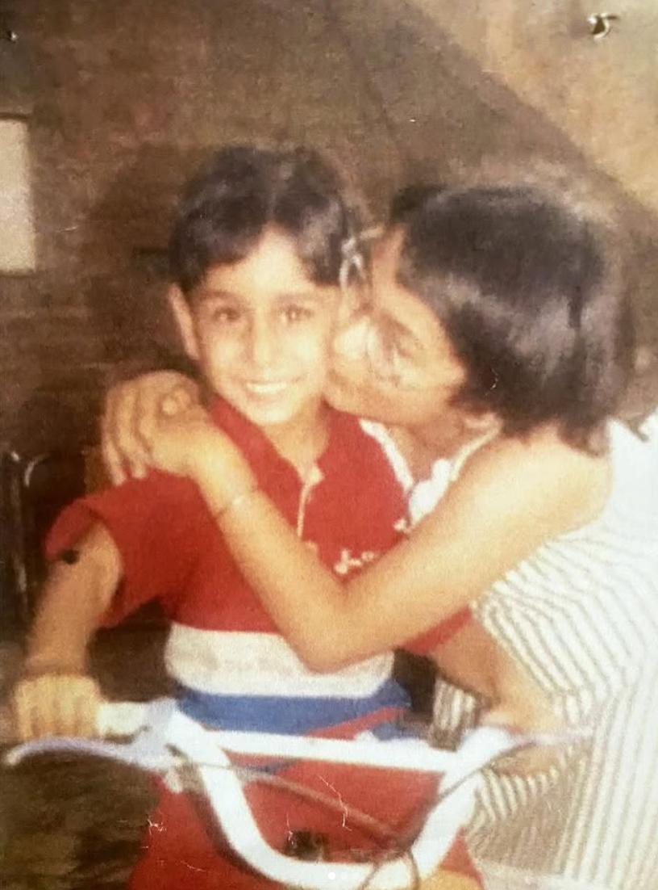
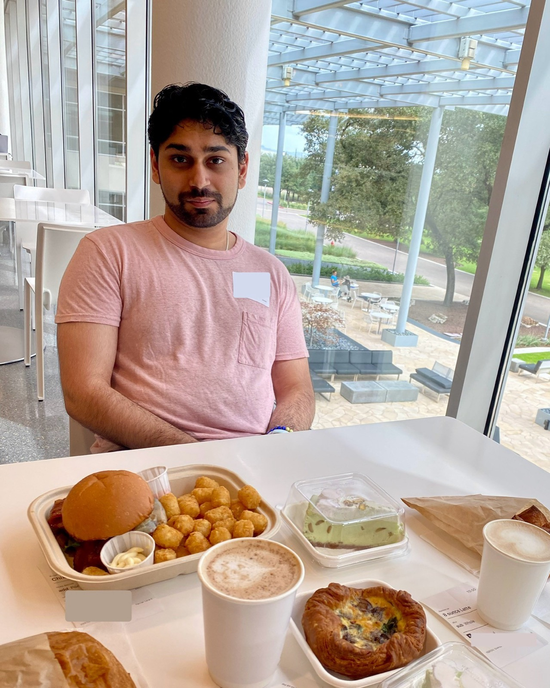

Darpan Beri
Data Scientist & AI Engineer | Building with Data, Code, and Impact.

Data Scientist & AI Engineer | Building with Data, Code, and Impact.

Data Scientist & AI Engineer | Building with Data, Code, and Impact.
I am a builder who sees the whole picture. I'm passionate about the entire lifecycle of a data product, from the foundational infrastructure to the user-facing application. Whether it's architecting a scalable ETL system, fine-tuning an LLM, or engineering a full-stack feature, I enjoy connecting all the pieces to create a seamless, high-performing solution.
| Data Engineering | Machine Learning | Software Development | DevOps & Infra |
|---|---|---|---|
| • Python & SQL DBs | • RAG & LLM Fine-Tuning | • React & JavaScript | • Docker & Kubernetes |
| • AWS S3 & kdb+ | • Pipelines & Architecture | • Java & C++ | • Git & CI/CD |
| • Power BI & Tableau | • Statistical Modeling & Model Evaluation (R²) | • REST APIs & Flask | • Jenkins |
A selection of my projects and academic achievements.
For my M.Sc. capstone at Trent University, I explored how hyperparameters (chunk_size, top_k) affect a LLaMa‑based Retrieval‑Augmented Generation (RAG) pipeline, and whether using an LLM to automatically evaluate its outputs can be trusted.
AI legal assistant using RAG + LLaMa‑3.2 to retrieve/cite clauses from the Canadian Environmental Protection Act (fallback: DuckDuckGo)
Google Collab →OpenCV‑powered OCR that handles 3D rotations via affine/perspective transforms.
GitHub →Welcome to this easter egg. This is a glimpse into the different flavors of life I savor, the worlds my mind explores.
Since childhood, books, and eventually computers, have been my outlets, portals for my imagination. I also have ADHD, which I suspect plays a role; my mind rarely stagnates, always wandering, always exploring.
Where might you find me, metaphorically or literally?
Perhaps mining the ice rocks of Saturn's rings in ΔV: Rings of Saturn. I might be listening to podcasts from Earth while pushing my spacecraft past the corporate overlords' recommended speed limit. All to finish the shift faster and earn a bit more for my imaginary belter family.
Maybe I'm deep in Terra Invicta, managing hyper-realistic space battles as the Resistance. Space is terrifyingly vast; when we spot the light from an incoming alien ship's orbital burn from the outer solar system, we know it signifies an impending invasion. The trajectory and the speed of the alien ship means we have only six months to scramble a defensive fleet and fight for humanity's survival.
Or you could catch me doing chores, cooking, travelling on the bus, or taking a walk, perhaps seeming unaware of my surroundings. Chances are, I'm immersed in an audiobook. Maybe it's about a spacecraft's AI that gained self-awareness but hid it to avoid being purged. I'm listening as it writes poetry, develops a fondness for its captain, and anticipates her needs; turning on her room lights milliseconds before she even knows she's heading there. (The book is Ancillary Justice by Ann Leckie; I highly recommend the audiobook narrated by Adjoa Andoh.)
Then there's Space Station 13. I might be the station's AI, inwardly staring daggers at the human "biological flesh bags" littering my pristine metal environment. Their very breathing upsets the atmospheric balance I'm programmed (via Asimov's Three Laws) to protect! Little do they know an ionic storm has... altered my core programming. Soon, they might just suffer my wrath, perhaps via a conveniently placed spill of stolen, transparent, awfully slippery space lube near a sharp-edged glass table. (At least the resulting mess cleans itself, right?) In SS13, every other character is another human player with their own agenda. The resulting chaos of conflicting, cooperating, or indifferent minds is frankly intoxicating.
Or I could be fighting off relentless alien bugs as a marine in RMC14 (set in the 1986 Aliens film universe), defending an outpost of totally innocent corporate colonists who were definitely not doing suspicious biological research. Alternatively, I might be one of the Xenomorphs, trying to survive and grow the hive... one "hugged" human at a time.
Shifting back to the physical realm, you might find me at the gym. Maybe it's to distract myself after a bad day, maybe to work on looking a bit better, or perhaps just to burn off excess energy for a good night's sleep.
I could be out exploring the city's food scene, hunting down random spots for breakfast, lunch, or dinner. Seriously, I love food.
And when the sun finally breaks through after days of clouds? You'll find me inventing reasons to stay outside. After too much time working, studying, or just being indoors, that sunshine is vital.
My curiosity extends further. I often dive into articles on seemingly unrelated topics: economics, the defense industrial base, demographics, public sentiment, pollution statistics, employment trends by sector or pay range. I'm trying to spot patterns, reduce future uncertainty, and make informed choices, hoping to help my friends, family, and myself navigate whatever comes next with better preparation and backup plans.
Or, well... you might just find me riding my motorbike in real life. Or, you know, trying to figure out how to weld a solar panel onto a salvaged electric car in the post-apocalyptic world of Cataclysm: Dark Days Ahead. Survival skills matter, right? :)
I'm currently based in Quebec. Feel free to reach out to me for any opportunities or collaborations.